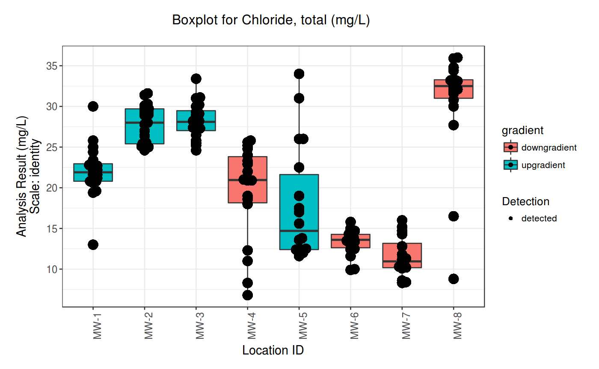
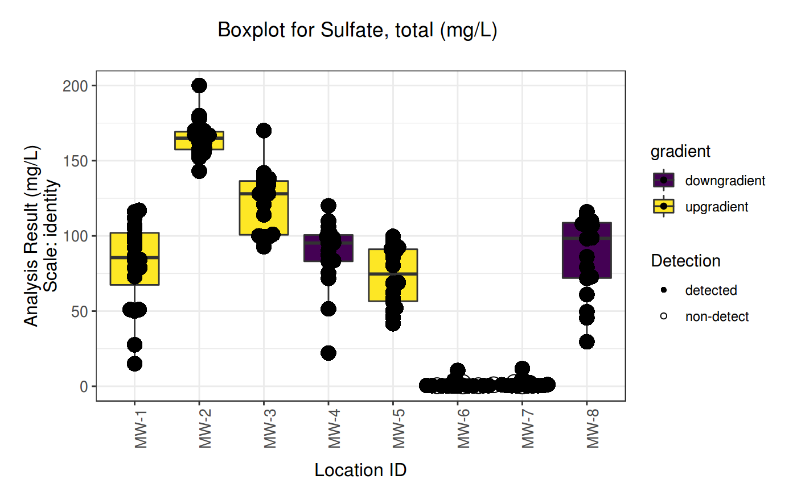

<!-- Generated by pkgdown: do not edit by hand -->
<!DOCTYPE html>
<html lang="en">
  <head>
  <meta charset="utf-8">
<meta http-equiv="X-UA-Compatible" content="IE=edge">
<meta name="viewport" content="width=device-width, initial-scale=1.0">

<title>Boxplot function — boxplot • manager</title>

<link rel="shortcut icon" type="image/x-icon" href="../favicon.ico">

<!-- jquery -->
<script src="https://cdnjs.cloudflare.com/ajax/libs/jquery/3.3.1/jquery.min.js" integrity="sha256-FgpCb/KJQlLNfOu91ta32o/NMZxltwRo8QtmkMRdAu8=" crossorigin="anonymous"></script>
<!-- Bootstrap -->

<link href="https://maxcdn.bootstrapcdn.com/bootstrap/3.3.7/css/bootstrap.min.css" rel="stylesheet" integrity="sha384-BVYiiSIFeK1dGmJRAkycuHAHRg32OmUcww7on3RYdg4Va+PmSTsz/K68vbdEjh4u" crossorigin="anonymous">
<script src="https://maxcdn.bootstrapcdn.com/bootstrap/3.3.7/js/bootstrap.min.js" integrity="sha384-Tc5IQib027qvyjSMfHjOMaLkfuWVxZxUPnCJA7l2mCWNIpG9mGCD8wGNIcPD7Txa" crossorigin="anonymous"></script>

<!-- Font Awesome icons -->
<link href="https://maxcdn.bootstrapcdn.com/font-awesome/4.6.3/css/font-awesome.min.css" rel="stylesheet" integrity="sha384-T8Gy5hrqNKT+hzMclPo118YTQO6cYprQmhrYwIiQ/3axmI1hQomh7Ud2hPOy8SP1" crossorigin="anonymous">

<!-- clipboard.js -->
<script src="https://cdnjs.cloudflare.com/ajax/libs/clipboard.js/2.0.1/clipboard.min.js" integrity="sha256-hIvIxeqhGZF+VVeM55k0mJvWpQ6gTkWk3Emc+NmowYA=" crossorigin="anonymous"></script>

<!-- sticky kit -->
<script src="https://cdnjs.cloudflare.com/ajax/libs/sticky-kit/1.1.3/sticky-kit.min.js" integrity="sha256-c4Rlo1ZozqTPE2RLuvbusY3+SU1pQaJC0TjuhygMipw=" crossorigin="anonymous"></script>

<!-- pkgdown -->
<link href="../pkgdown.css" rel="stylesheet">
<script src="../pkgdown.js"></script>


<meta property="og:title" content="Boxplot function — boxplot" />

<meta property="og:description" content="Boxplot function" />
<meta name="twitter:card" content="summary" />


<!-- mathjax -->
<script src='https://cdnjs.cloudflare.com/ajax/libs/mathjax/2.7.5/MathJax.js?config=TeX-AMS-MML_HTMLorMML'></script>

<!--[if lt IE 9]>
<script src="https://oss.maxcdn.com/html5shiv/3.7.3/html5shiv.min.js"></script>
<script src="https://oss.maxcdn.com/respond/1.4.2/respond.min.js"></script>
<![endif]-->


  </head>

  <body>
    <div class="container template-reference-topic">
      <header>
      <div class="navbar navbar-default navbar-fixed-top" role="navigation">
  <div class="container">
    <div class="navbar-header">
      <button type="button" class="navbar-toggle collapsed" data-toggle="collapse" data-target="#navbar" aria-expanded="false">
        <span class="sr-only">Toggle navigation</span>
        <span class="icon-bar"></span>
        <span class="icon-bar"></span>
        <span class="icon-bar"></span>
      </button>
      <span class="navbar-brand">
        <a class="navbar-link" href="../index.html">manager</a>
        <span class="label label-default" data-toggle="tooltip" data-placement="bottom" title="Released version">0.1.0.9000</span>
      </span>
    </div>

    <div id="navbar" class="navbar-collapse collapse">
      <ul class="nav navbar-nav">
        <li>
  <a href="../index.html">
    <span class="fa fa-home fa-lg"></span>
     
  </a>
</li>
<li>
  <a href="../reference/index.html">Reference</a>
</li>
<li class="dropdown">
  <a href="#" class="dropdown-toggle" data-toggle="dropdown" role="button" aria-expanded="false">
    Articles
     
    <span class="caret"></span>
  </a>
  <ul class="dropdown-menu" role="menu">
    <li>
      <a href="../articles/geochemical_plots.html">Geochemical Plots</a>
    </li>
    <li>
      <a href="../articles/intro.html">Introduction to manager</a>
    </li>
    <li>
      <a href="../articles/updating_background.html">Updating Background Groundwater Quality Data Used in Detection Monitoring</a>
    </li>
  </ul>
</li>
      </ul>
      
      <ul class="nav navbar-nav navbar-right">
        <li>
  <a href="https://github.com/jentjr/manager">
    <span class="fa fa-github fa-lg"></span>
     
  </a>
</li>
      </ul>
      
    </div><!--/.nav-collapse -->
  </div><!--/.container -->
</div><!--/.navbar -->

      
      </header>

<div class="row">
  <div class="col-md-9 contents">
    <div class="page-header">
    <h1>Boxplot function</h1>
    <small class="dont-index">Source: <a href='https://github.com/jentjr/manager/blob/master/R/boxplot.R'><code>R/boxplot.R</code></a></small>
    <div class="hidden name"><code>boxplot.Rd</code></div>
    </div>

    <div class="ref-description">
    
    <p>Boxplot function</p>
    
    </div>

    <pre class="usage"><span class='fu'>boxplot</span>(<span class='no'>df</span>, <span class='kw'>x</span> <span class='kw'>=</span> <span class='st'>"location_id"</span>, <span class='kw'>y</span> <span class='kw'>=</span> <span class='st'>"analysis_result"</span>,
  <span class='kw'>lt_measure</span> <span class='kw'>=</span> <span class='st'>"lt_measure"</span>, <span class='kw'>group_var</span> <span class='kw'>=</span> <span class='st'>"param_name"</span>, <span class='kw'>coef</span> <span class='kw'>=</span> <span class='fl'>3</span>,
  <span class='kw'>scale_y_trans</span> <span class='kw'>=</span> <span class='st'>"identity"</span>, <span class='kw'>show_points</span> <span class='kw'>=</span> <span class='fl'>TRUE</span>, <span class='kw'>fill</span> <span class='kw'>=</span> <span class='kw'>NULL</span>,
  <span class='kw'>limit1</span> <span class='kw'>=</span> <span class='kw'>NULL</span>, <span class='kw'>limit2</span> <span class='kw'>=</span> <span class='kw'>NULL</span>, <span class='kw'>pnt</span> <span class='kw'>=</span> <span class='fl'>2</span>, <span class='kw'>short_name</span> <span class='kw'>=</span> <span class='fl'>FALSE</span>,
  <span class='kw'>coord_flip</span> <span class='kw'>=</span> <span class='fl'>FALSE</span>, <span class='kw'>legend_title</span> <span class='kw'>=</span> <span class='kw'>NULL</span>)</pre>
    
    <h2 class="hasAnchor" id="arguments"><a class="anchor" href="#arguments"></a>Arguments</h2>
    <table class="ref-arguments">
    <colgroup><col class="name" /><col class="desc" /></colgroup>
    <tr>
      <th>df</th>
      <td><p>groundwater data in tidy format</p></td>
    </tr>
    <tr>
      <th>x</th>
      <td><p>column to be used for the x axis, default is location</p></td>
    </tr>
    <tr>
      <th>y</th>
      <td><p>column to be used for the y axis, default is analysis result</p></td>
    </tr>
    <tr>
      <th>lt_measure</th>
      <td><p>column for &gt;, or &lt; identifier</p></td>
    </tr>
    <tr>
      <th>group_var</th>
      <td><p>the name of column used for constituents. Default is
"param_name"</p></td>
    </tr>
    <tr>
      <th>coef</th>
      <td><p>length of the whiskers as multiple of the IQR. Defualt is 3.</p></td>
    </tr>
    <tr>
      <th>scale_y_trans</th>
      <td><p>type of transformation to use for y scale. Default is
"identity".  Built-in transformations include "asn", "atanh", "boxcox",
"exp", "identity", "log", "log10", "log1p", "log2", "logit", "probability",
"probit", "reciprocal", "reverse" and "sqrt".</p></td>
    </tr>
    <tr>
      <th>show_points</th>
      <td><p>plot the individual points using ggbeeswarm.</p></td>
    </tr>
    <tr>
      <th>fill</th>
      <td><p>column used to fill the variable</p></td>
    </tr>
    <tr>
      <th>limit1</th>
      <td><p>column to be used to draw horizontal line</p></td>
    </tr>
    <tr>
      <th>limit2</th>
      <td><p>column to be used to draw a second horizontal line</p></td>
    </tr>
    <tr>
      <th>pnt</th>
      <td><p>size of points</p></td>
    </tr>
    <tr>
      <th>short_name</th>
      <td><p>If TRUE the constituent name will be abbreviated</p></td>
    </tr>
    <tr>
      <th>coord_flip</th>
      <td><p>If TRUE the axes are flipped</p></td>
    </tr>
    <tr>
      <th>legend_title</th>
      <td><p>Legend title for fill variable</p></td>
    </tr>
    </table>
    

    <h2 class="hasAnchor" id="examples"><a class="anchor" href="#examples"></a>Examples</h2>
    <pre class="examples"><div class='input'><span class='fu'>data</span>(<span class='no'>gw_data</span>)
<span class='no'>gw_data</span> <span class='kw'>%&gt;%</span>
<span class='fu'>filter</span>(<span class='no'>param_name</span> <span class='kw'>%in%</span> <span class='fu'>c</span>(<span class='st'>"Chloride, total"</span>, <span class='st'>"Sulfate, total"</span>),
      <span class='no'>location_id</span> <span class='kw'>%in%</span> <span class='fu'>c</span>(<span class='st'>"MW-1"</span>, <span class='st'>"MW-2"</span>, <span class='st'>"MW-3"</span>, <span class='st'>"MW-4"</span>,
      <span class='st'>"MW-5"</span>, <span class='st'>"MW-6"</span>, <span class='st'>"MW-7"</span>, <span class='st'>"MW-8"</span>)) <span class='kw'>%&gt;%</span>
 <span class='fu'>mutate</span>(<span class='kw'>gradient</span> <span class='kw'>=</span> <span class='fu'>if_else</span>(<span class='no'>location_id</span> <span class='kw'>%in%</span> <span class='fu'>c</span>(<span class='st'>"MW-1"</span>, <span class='st'>"MW-2"</span>, <span class='st'>"MW-3"</span>, <span class='st'>"MW-5"</span>),
 <span class='st'>"upgradient"</span>, <span class='st'>"downgradient"</span>)) <span class='kw'>%&gt;%</span>
 <span class='fu'>boxplot</span>(<span class='no'>.</span>, <span class='kw'>fill</span> <span class='kw'>=</span> <span class='st'>"gradient"</span>)</div><div class='img'></div><div class='img'></div><div class='output co'>#&gt; Source: local data frame [2 x 2]
#&gt; Groups: &lt;by row&gt;
#&gt; 
#&gt; # A tibble: 2 x 2
#&gt;   param_name      plot    
#&gt; * &lt;chr&gt;           &lt;list&gt;  
#&gt; 1 Chloride, total &lt;S3: gg&gt;
#&gt; 2 Sulfate, total  &lt;S3: gg&gt;</div><div class='input'>
</div></pre>
  </div>
  <div class="col-md-3 hidden-xs hidden-sm" id="sidebar">
    <h2>Contents</h2>
    <ul class="nav nav-pills nav-stacked">
      <li><a href="#arguments">Arguments</a></li>
            
      <li><a href="#examples">Examples</a></li>
    </ul>

  </div>
</div>

      <footer>
      <div class="copyright">
  <p>Developed by Justin Jent.</p>
</div>

<div class="pkgdown">
  <p>Site built with <a href="http://pkgdown.r-lib.org/">pkgdown</a>.</p>
</div>

      </footer>
   </div>

  

  </body>
</html>

